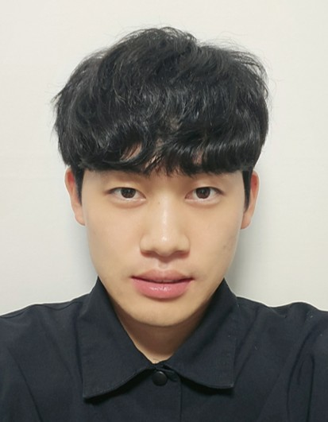

A Mixed-Precision Approach to a Preconditioned Eigensolver for Efficient Density Functional Calculations on AI-Focused GPUs

Jeheon Woo · AI Fellow (AI Assistant Professor)
* corresponding author · † co-first / equal contribution. Full list on Google Scholar.
2026
A Mixed-Precision Approach to a Preconditioned Eigensolver for Efficient Density Functional Calculations on AI-Focused GPUs
Riemannian Denoising Model for Molecular Structure Optimization with Chemical Accuracy
2024
Efficient Shift-and-Invert Preconditioning for Multi-GPU Accelerated Density Functional Calculations
Diffusion-Based Generative AI for Exploring Transition States from 2D Molecular Graphs
2023
Gaussian-Approximated Poisson Preconditioner for Iterative Diagonalization in Real-Space Density Functional Theory
Dynamic Precision Approach for Accelerating Large-Scale Eigenvalue Solvers in Electronic Structure Calculations on Graphics Processing Units
2022
System-Specific Separable Basis Based on Tucker Decomposition: Application to Density Functional Calculations
Neural Network-Based Pseudopotential: Development of a Transferable Local Pseudopotential
2020
ACE-Molecule: An Open-Source Real-Space Quantum Chemistry Package
2025
Discrete Diffusion Schrödinger Bridge Matching for Graph Transformation
2023
GeoTMI: Predicting Quantum Chemical Property with Easy-to-Obtain Geometry via Positional Denoising